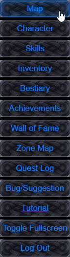
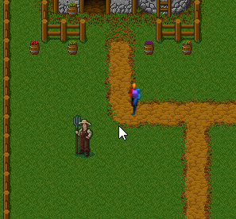

Map Screen

Welcome to the map screen! This is where you go to interact with the world, move around the map, pick up quests, and find enemies!
The first thing you should always keep track of is the enemy level of the zone you are in, this can be found in the Information Box in the bottom right, it's best not to venture too far into zones where the monster level is much higher then your own.
To talk to an NPC, simplly walk up to them and their dialog will appear when you get close, same goes for entering portals and reading signs.
